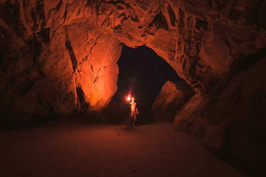

Fish Haven
Weather Summary
Currently:
High: °F
Wind Chill:
Humidity: %
Wind Speed: Mph
Five Day Forecast

Upcoming Events
Minnetonka Cave
visitidaho.org
Minnetonka Cave, in beautiful St. Charles Canyon northwest of Bear Lake, offers a half-mile of fascinating stalactites, stalagmites, and banded travertine in nine rooms. From mid-June until Labor Day, over 20,000 people visit the Cave and take the guided tours. The cave stays a brisk 40 degrees all year so bring your jacket! Minnetonka is one of two caverns administered by the Forest Service. Within St. Charles Canyon are campgrounds and a large group use areas with fishing and hiking nearby. Keep an eye out for resident wildlife such as moose and deer. Due to the westward spread of White Nose syndrome (WNS), restrictions on clothing and items that have been in other caves are currently in place at Minnetonka Cave to prevent introduction of this bat disease into Idaho. It is possible for humans to spread the disease between caves if clothing or equipment has been exposed to the fungus. Leaving clothing or other items that have been in another cave at home, will help protect bat species inhabiting Minnetonka Cave. The introduction of this disease into Minnetonka Cave would devastate local bat populations, and in the event of a cave closure, greatly impact local economies.